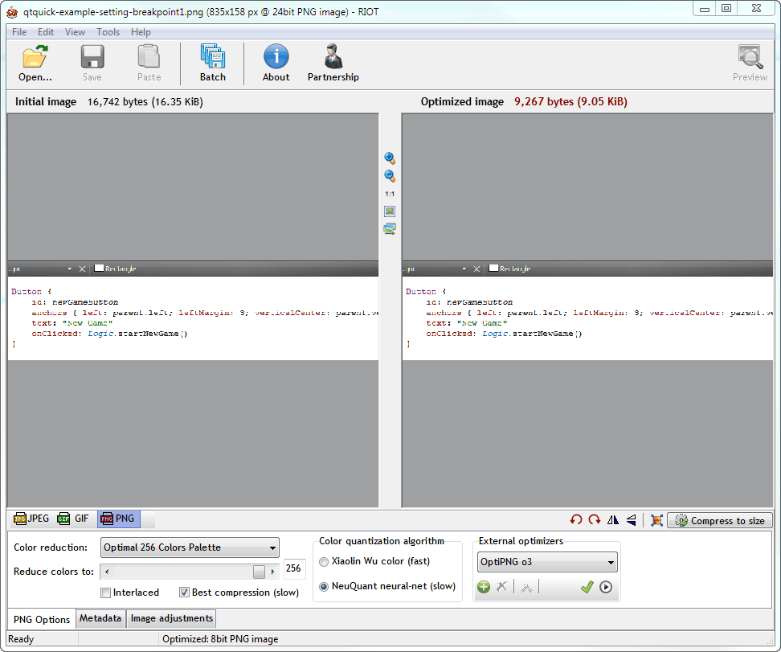

Writing Documentation
When you add plugins or contribute new features to Qt Creator, you probably want other people to know about them and to be able to use them. Therefore, you should also contribute documentation for them. Follow the guidelines in this section to make sure that your documentation fits in well with the rest of the Qt Creator documentation.
When you contribute a plugin, you should write documentation both for the developers who use Qt Creator and for the ones who develop it.
Write the following user documentation for addition to the Qt Creator Manual or as a separate Plugin Manual if your plugin is located in a repository of its own:
- Overview topic, which describes the purpose of your plugin from the viewpoint of Qt Creator users
- Procedure topics, which describe how to use your plugin as part of Qt Creator
- Reference topics, which contain information that developers occasionally need to look up (optional)
Write the following developer documentation for addition to the Extending Qt Creator Manual:
- Overview topic, which describes the architecture and use cases for your plugin from the viewpoint of Qt Creator developers
- API documentation, which is generated from code comments
Configuring Documentation Projects
Qt Creator documentation is written by using QDoc. For more information about using QDoc, see the QDoc Manual.
QDoc finds the new topics automatically, when you place them as .qdoc files in a doc source folder. However, to make the topics accessible to readers, you must also add them to the table of contents and fix the next page and previous page links to them from other topics.
Creating Folders and Files
The qtcreator repository contains the sources for building the following documents:
- Qt Creator Manual
- Extending Qt Creator Manual
- Qt Design Studio Manual
The sources for each project are stored in the following subfolders of the Qt Creator project folder:
\doc\qtcreator\src\doc\qtcreatordev\src\doc\qtdesignstudio\src
The Qt Design Studio Manual is based on the Qt Creator Manual, with additional topics.
The Extending Qt Creator Manual has its own sources. In addition, it pulls in API reference documentation from the Qt Creator source files. Add code documentation directly to the code source files. However, you can write an API overview also as a separate .qdoc file.
Create a subfolder for your documentation in the appropriate src folder. Create a separate file for each topic.
The easiest way is probably to copy an existing file, save it as a new file, and modify it. This way, you already have samples of the necessary bits and pieces in place, such as topic start and end commands, copyright statement, links to next and previous topics, and topic title.
Integrating Topics to Documentation
You must integrate your new topics to the manuals by adding links to them to the table of contents and to other relevant topics.
To link to the topic, you can use the topic title. For example:
\l{Integrating Topics to Documentation}
This does not work if topic titles are not unique. Also, if you change the title, the link breaks. You can avoid this risk by adding the \target command to your topic and then linking to the target.
Showing and Hiding Information
Qt Design Studio uses only a subset of Qt Creator plugins and it has its own special plugins. This means that their manuals have somewhat different structures. Which, in turn breaks the navigation links to previous and next pages.
This also means that some of the Qt Creator Manual source files are not needed at all and some contain information that does not apply to the Qt Design Studio Manual. If QDoc parsed all the Qt Creator Manual sources, it would generate HTML files for each topic and include those files and all the images that they refer to in the Qt Design Studio help compilation files. This would unnecessarily increase the size of the Qt Design Studio help database and pollute the help index with references to files that are not actually listed in the table of contents of the Qt Design Studio Manual. To avoid this, some files are excluded from the Qt Design Studio Manual builds.
Excluding Source Files from Qt Design Studio Manual Builds
The directories to exclude from Qt Design Studio Manual builds are listed as values of the excludedirs option in \doc\qtdesignstudio\config\qtdesignstudio.qdocconf.
You only need to edit the values of the option if you want to show or hide all the contents of a directory. For example, if you add support for a Qt Creator plugin that was previously not supported by Qt Design Studio, you should remove the directory that contains the documentation for the plugin from the values.
To hide or show individual topics within individual .qdoc files, you need to move the files in the Qt Creator Manual source (\doc\qtcreator\src) to or from the excluded directories.
For example, if support for iOS were added, you would need to check whether the information about iOS support is applicable to Qt Design Studio Manual. If yes, you would need to remove the following line from the excludedirs value:
../../src/ios \
You would then use defines to hide any Qt Creator specific information from the source file in the directory.
If a directory contains some files that are needed in both manuals and some that are only needed in the Qt Creator Manual, the latter are located in a subdirectory called creator-only, which is excluded from the Qt Design Studio Manual builds.
Hiding Text in Qt Creator Manual Sources
The qtcreator define is specified as a value of the defines option in the Qt Creator QDoc configuration file, \doc\qtcreator\config\qtcreator-project.qdocconf. It is mostly used in the Qt Creator Manual sources to hide Qt Creator specific information when the Qt Design Studio Manual is built.
The \else command is sometimes used to replace some Qt Creator specific text with text that applies to Qt Design Studio. For example, the following if-else statement is needed in the Qt Creator Manual sources, because the project wizards in Qt Design Studio are different from those in Qt Creator, and are therefore described in a new topic that is located in the Qt Design Studio Manual sources:
For more information, see
\if defined(qtcreator)
\l{Creating Qt Quick Projects}.
\else
\l{Creating UI Prototype Projects}.
\endif
Note: Section titles in the two manuals can be identical only if the page is excluded from the Qt Design Studio Manual. In this case, QDoc can correctly determine the link target. If you add a link to a section title that appears twice in the doc source files, QDoc uses the first reference to that title in the .index file.
Writing About Qt Design Studio Specific Features
Qt Design Studio specific plugins and features are described in a set of doc source files located in the \doc\qtdesignstudio\src directory. Some files are used to include subsections in topics in the Qt Creator Manual sources.
Screenshots and other illustrations are stored in the \qtdesignstudio\images directory.
If you add new topics to the Qt Design Studio Manual, add links to them to the table of contents in qtdesignstudio-toc.qdoc and check the values of the navigation links around them.
Including Sections in Qt Creator Manual Sources
Qt Quick Designer is an integral part of both Qt Creator and Qt Design Studio. Therefore, most topics that describe it are needed in the manuals of both tools. You can use the \include command in the Qt Creator Manual sources to include .qdocinc files from the Qt Design Studio Manual sources when building the Qt Design Studio Manual.
For example, the following lines in the \doc\qtcreator\src\qtquick\qtquick-components.qdoc file add information about creating and using Qt Design Studio Components to the Creating Components topic that is pulled from the Qt Creator Manual sources:
\if defined(qtdesignstudio) \include qtdesignstudio-components.qdocinc creating studio components \include qtdesignstudio-components.qdocinc studio components \endif
Similarly, you can use include files to include subsections in different main level topics in the two manuals.
Updating Next and Previous Links
When you add new topics to a document, you must also change the navigation links of the topics around them.
The navigation order of the topics in the Qt Creator Manual is specified in \doc\qtcreator\src\qtcreator-toc.qdoc and that of the topics in the Qt Design Studio Manual in \doc\qtdesignstudio\src\qtdesignstudio-toc.qdoc. If you add topics to or move them around in a TOC file, you must adjust the navigation links accordingly.
The qtdesignstudio define is specified as a value of the defines option in the Qt Design Studio Manual configuration file, qtcreator\doc\qtdesignstudio\config\qtdesignstudio.qdocconf. It is mostly used in the Qt Creator Manual sources to specify values for the \previouspage and \nextpage commands depending on whether the Qt Design Studio Manual or Qt Creator Manual is being built. For example, the following if-else statement is needed, because only the Git version control system is integrated to Qt Design Studio, and information about the other systems integrated to Qt Creator is hidden:
\page creator-vcs-git.html \if defined(qtdesignstudio) \previouspage studio-projects.html \nextpage studio-importing-designs.html \else \previouspage creator-vcs-cvs.html \nextpage creator-vcs-mercurial.html \endif
Adding Documentation for Independent Plugins
You can develop Qt Creator plugins in separate repositories. Such plugins should have their own help files (.qch) that are installed and registered only if the plugin is installed.
The easiest way to set up the documentation project for an independent plugin is to copy it from an existing repository, such as the Fossil plugin, and then make the necessary changes.
Use the following naming scheme for Qt Creator plugin manuals: Qt Creator <Plugin Name> Plugin Manual. For example, Qt Creator Fossil Plugin Manual.
Writing Text
Follow the guidelines for writing Qt documentation.
The documentation must be grammatically correct English and use the standard form of written language. Do not use dialect or slang words. Use idiomatic language, that is, expressions that are characteristic for English. If possible, ask a native English speaker for a review.
Capitalizing Headings
Use the book title capitalization style for all titles and section headings (\title, \section1, \section2, and so on). For more information, see Using Book Style Capitalization.
Using Images
You can illustrate your documentation by using screen shots, diagrams, and other images.
Use the \image and \inlineimage QDoc commands to refer to images from the text. You do not need to add paths to image names. For example:
\image riot.png
Taking Screen Shots
Qt Creator has the native look and feel on Windows, Linux, and macOS, and therefore, screen shots can end up looking very different, depending on who takes them and which system they use. To try to preserve a consistent look and feel in the Qt Creator Manual, observe the guidelines listed in this section when taking screen shots.
Note: Do not rely on screen shots present reasonable example values to users, but always place example values also in the text.
- Use the screen resolution of 1366x768 (available on the most commonly used screens, as of this writing).
- Use the aspect ratio of 16:9.
- Open the application in the maximum size on full screen.
- Use your favorite tool to take the screen shot.
- Include only the part of the screen that you need (you can crop the image also in the screen capture tool).
- To highlight parts of the screen shot, use the images of numbers that are stored in
doc/images/numbersin the Qt Creator repository. - Before you submit the images to the repository, optimize them to save space.
Hightlighting Parts of the Screen
You can use number icons in screenshots to highlight parts of the screenshot (instead of using red arrows or borders, or something similar). You can then refer to the numbers in text. For and example, see the Development Tools topic in the Qt reference documentation.
This improves the consistency of the look and feel of Qt documentation, and eliminates the need to describe parts of the UI in the text, because you can just insert the number of the element you are referring to in brackets.
You can find a set of images that show the numbers from 1 to 10 in the doc/images/numbers directory (or in the qtdoc module sources in doc/images/numbers).
To use the numbers, copy-paste the number images on the screenshot to the places that you want to refer to from text.
Optimizing Images
Save images in the PNG format in the Qt Creator project folder in the doc/images folder. Binary images can easily add megabytes to the Git history. To keep the history as small as possible, the Git post-commit hooks remind you to try to keep image size below 50 kilobytes. To achieve this goal, crop images so that only relevant information is visible in them. Before committing images, optimize them by using an image optimization tool.
Optimization should not visibly reduce image quality. If it does, do not do it.
You can use a web service, such as https://tinypng.com, or an image optimization tool to shrink the images. For example, you can use the Radical Image Optimization Tool (RIOT) or OptiPNG on Windows, ImageOptim on macOS, or some other tool available on Linux.
With ImageOptim, you simply drag and drop the image files to the application. The following section describes the settings to use for RIOT.
Using RIOT
Download and install RIOT.

Open your images in RIOT and use the following settings for them:
- Color reduction: Optimal 256 colors palette
- Reduce colors to: 256
- Best compression (slow)
- Color quantization algorithm: NeuQuant neural-net (slow)
- External optimizers: OptiPNG o3
Compare the initial and optimized images to check that image quality is preserved. If the image quality deteriorates, do not use color reduction (select the True Color option, instead).
You can also see the sizes of the initial and optimized image.
Using OptiPNG
Download and install OptiPNG.
OptiPNG is a command-line tool that you can invoke from the Qt Creator project folder (or any folder that contains your project). To optimize a screenshot, enter the following command (here, from the Qt Creator project folder):
optipng -o 7 -strip all doc/images/<screenshot_name>
Linking to Youtube Videos
You can use the \youtube macro to link to a video on Youtube. The HTML docs show a thumbnail of the video with a play button.
The support for the macro is defined in the qtcreator\doc\config\macros.qdocconf and qtcreator\doc\config\macros-online.qdocconf files. To use the macro, you need to save a thumbnail of the video in qtcreator\doc\qtcreator\images\extraimages\images.
You can use the following URL to open the thumbnail image in a browser: https://img.youtube.com/vi/<ID>/0.jpg. The <ID> is the ID of the video on Youtube. For example, if the URL to the video is https://www.youtube.com/watch?v=9ihYeC0YJ0M&feature=youtu.be, the ID is 9ihYeC0YJ0M. Save the image file as 9ihYeC0YJ0M.jpg.
You must add the filename of the thumbnail file to qtcreator-extraimages.qdocconf and qtdesignstudio-extraimages.qdocconf files in the \qtcreator\doc\qtcreator\images\extraimages folder.
If you'll only link to the video from the Qt Creator Manual or the Qt Design Studio Manual, you'll only need to add the thumbnail filename to the extraimages.qdocconf file for that project.
For example, to enable linking to a video with the thumbnail filename 9ihYeC0YJ0M.jpg in the Qt Design Studio Manual, the qtdesignstudio-extraimages.qdocconf file should contain the filename:
{HTML.extraimages,qhp.qtdesignstudio.extraFiles} += \
images/commercial.png \
images/9ihYeC0YJ0M.jpg
To add a link to the video in text, you would write:
\youtube 9ihYeC0YJ0M
Note: Leave out the filename extension when referring to the thumbnail.
Building Documentation
You use QDoc to build the documentation. Build the documentation before submitting any documentation patches, to check its structure, contents, and the validity of the QDoc commands. The error messages that QDoc issues are generally very useful for troubleshooting.
Setting Up Documentation Builds
You can configure documentation builds using CMake or qmake.
Note: Since Qt Creator version 4.12, only Qt 5.14.0 or later is supported for building documentation.
For more information about setting up the build environment with a self-built Qt if you do not want to build the whole Qt, see Building Qt Documentation on the Qt wiki.
The content and formatting of documentation are separated in QDoc. The documentation configuration, style sheets, and templates have changed over time, so they differ between Qt and Qt Creator versions.
The templates to use are defined by the qt5/qtbase/doc/global/qt-html-templates-offline.qdocconf and qt5/qtbase/doc/global/qt-html-templates-online.qdocconf configuration file. They are fetched from Qt sources by adding the following lines to the qdocconf file:
include ($QT_INSTALL_DOCS/global/qt-html-templates-offline.qdocconf)for help filesinclude ($QT_INSTALL_DOCS/global/qt-html-templates-online.qdocconf)for publishing on the web
Note: If the styles look wrong to you when reading help files in Qt Creator or Qt Assistant, you might be using the QTextBrowser as the help engine backend instead of litehtml. For more information, see Selecting the Help Viewer Backend.
To build documentation for the sources from the qtcreator master branch, use build scripts defined in the doc.pri file. You can build the docs using either the offline or online style. The offline style is used for generating HTML files included in help files (.qch), whereas the online style is used at doc.qt.io.
Using CMake
When using CMake, the docs are built in the Qt Creator build folder or a separate doc build folder, not in the project folder.
To get the correct product name and version when building Qt Design Studio Manual, you must run CMake with the branding option. The branding data is located in the Qt Design Studio (private) repository, tqtc-plugin-qtquickdesigner.
To build docs with CMake in a separate doc build folder:
- Create a folder for the built docs and switch to it. For example,
C:\dev\qtc-doc-build. - In the doc build folder, enter the following command:
cmake -DWITH_DOCS=ON "-DCMAKE_PREFIX_PATH=<path_to_qt>" <path_to_qtcreator_src>
For example (all on one line):
C:\dev\qtc-doc-build>cmake -DWITH_DOCS=ON "-DCMAKE_PREFIX_PATH=C:\Qt\5.15.1\msvc2019_64" C:\dev\qtc-super\qtcreator - To also build Extending Qt Creator Manual, add the following option:
-DBUILD_DEVELOPER_DOCS=ON - To also build the Qt Design Studio Manual, add the following option:
"-DCMAKE_MODULE_PATH=<absolute_path_to_qtquickdesignerrepo>/studiodata/branding/"For example:
C:\dev\qtc-doc-build>cmake -DWITH_DOCS=ON -DBUILD_DEVELOPER_DOCS=ON "-DCMAKE_MODULE_PATH=C:\dev\tqtc-plugin-qtquickdesigner\studiodata\branding" "-DCMAKE_PREFIX_PATH=C:\Qt\5.15.1\msvc2019_64" C:\dev\qtc-super\qtcreator - To build the docs using the online style, use the following option instead of
-DWITH_DOCS=ON:-DWITH_ONLINE_DOCS=ONFor example:
C:\dev\qtc-doc-build>cmake -DWITH_ONLINE_DOCS=ON -DBUILD_DEVELOPER_DOCS=ON "-DCMAKE_MODULE_PATH=C:\dev\tqtc-plugin-qtquickdesigner\studiodata\branding" "-DCMAKE_PREFIX_PATH=C:\Qt\5.15.1\msvc2019_64" C:\dev\qtc-super\qtcreatorNote: If you already ran CMake
-DWITH_DOCS=ONin a folder and want to switch to only online docs in that folder, you need to turn the offline docs off again:cmake -DWITH_DOCS=OFF -DWITH_ONLINE_DOCS=ON
- Enter the following doc build command to build both HTML docs and the help files (.qch):
cmake --build . --target docs
- Alternatively, to build only the HTML docs, enter:
cmake --build . --target html_docs
Note: You can enter cmake-gui to open the graphical CMake configuration tool, where you can select build options.
The HTML files for the documentation are generated in the following folders:
doc/html/qtcreatordoc/html/qtcreator-devdoc/html/qtdesignstudiodoc/html/qtcreator-onlinedoc/html/qtcreator-dev-onlinedoc/html/qtdesignstudio-online
The help files (.qch) are generated in the share/doc/qtcreator folder or in the <application_name>.app/Contents/Resources/doc\ folder on macOS.
You can view the HTML files in a browser and the help files in the Qt Creator Help mode. For more information about adding the help files to Qt Creator, see Adding External Documentation.
Using qmake
To build offline documentation using qmake:
- In the project folder, run
qmakefrom an installed Qt. For example:C:\dev\qtc-super\qtcreator>..\..\..\Qt\5.15.1\msvc2019_64\bin\qmake.exe
- Enter the following doc build command:
- On Windows:
nmake docs - On Linux and macOS:
make docs
- On Windows:
To build online documentation using qmake:
- In the project folder, run
qmakefrom an installed Qt with the online configuration option. For example:C:\dev\qtc-super\qtcreator>..\..\..\Qt\5.15.1\msvc2019_64\bin\qmake.exe "CONFIG+=build_online_docs" - Enter the following doc build command:
- On Windows:
nmake html_docs - On Linux and macOS:
make html_docs
- On Windows:
To get the correct product name and version when building the Qt Design Studio Manual, you must run qmake -r on qtcreator.pro with the IDE_BRANDING_PRI option set to the absolute path of ide_branding.pri in the Qt Design Studio (private) repository.
For example, on Windows enter (all on one line):
C:\dev\qtc-super\qtcreator>..\..\..\Qt\5.14.1\msvc2017_64\bin\qmake.exe
qtcreator.pro -r
IDE_BRANDING_PRI=C:\dev\tqtc-plugin-qtquickdesigner\studiodata\branding\ide_branding.pri
To use the offline style to build the Qt Design Studio help with qmake:
- In the
doc/qtdesignstudiofolder, runqmakefrom Qt 5.14.0, or later with the path to the branding information as an option (all on one line):<relative_path_to>/qmake.exe qtcreator.pro -r IDE_BRANDING_PRI=<absolute_path_to>/ide_branding.pri
- Run
make docson Linux and macOS ornmake docson Windows.
To use the online style to build the Qt Design Studio Manual with qmake:
- In the
doc/qtdesignstudiofolder, runqmakefrom Qt 5.14.0, or later with the path to the branding information as an option (all on one line):<relative_path_to>/qmake.exe qtcreator.pro -r IDE_BRANDING_PRI=<absolute_path_to>/ide_branding.pri
- Run
make html_docson Linux and macOS ornmake html_docson Windows.
The HTML files for the offline documentation are generated in the following folders:
doc/html/qtcreatordoc/html/qtcreator-devdoc/qtdesignstudio/doc/html/qtdesignstudio
The help files (.qch) are generated in the share/doc/qtcreator directory in the Qt Creator build directory on Windows and Linux, and in the bin/Qt Creator.app/Contents/Resources/app directory on macOS.
The HTML files for the online documentation are generated in the following folders:
doc/html/qtcreator-onlinedoc/html/qtcreator-dev-onlinedoc/qtdesignstudio/doc/html/qtdesignstudio-online
Additional Build Commands
Besides docs and html_docs, you can use the following build targets:
html_docs_<doc_config_file_name>- build the document (qtcreator/ qtcreator-dev/qtdesignstudio) in help format, but do not generate a help file (.qch)html_docs_<doc_config_file_name>-online- build the document (qtcreator/qtcreator-dev/qtdesignstudio) in online formatqch_docs_<doc_config_file_name>- build the document (qtcreator/ qtcreator-dev/qtdesignstudio) in help format and generate a help file